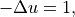
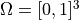
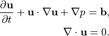
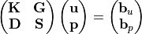
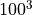
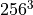
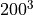
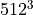

Benchmarks
The performance of the shared memory and the distributed memory versions of AMGCL algorithms was tested on two example problems in a three dimensional space. The source code for the benchmarks is available at https://github.com/ddemidov/amgcl_benchmarks.
The first example is the classical 3D Poisson problem. Namely, we look for the solution of the problem

in the unit cube  with homogeneous Dirichlet boundary conditions. The problem is discretized with the finite difference method on a uniform mesh.
The second test problem is an incompressible 3D Navier-Stokes problem discretized on a non uniform 3D mesh with a finite element method:

The discretization uses an equal-order tetrahedral Finite Elements stabilized with an ASGS-type (algebraic subgrid-scale) approach. This results in a linear system of equations with a block structure of the type

where each of the matrix subblocks is a large sparse matrix, and the blocks
 and are non-square. The overall system
matrix for the problem was assembled in the Kratos multi-physics package
developed in CIMNE, Barcelona.
and are non-square. The overall system
matrix for the problem was assembled in the Kratos multi-physics package
developed in CIMNE, Barcelona.
Distributed Memory Benchmarks
Here we demonstrate performance and scalability of the distributed memory algorithms provided by AMGCL on the example of a Poisson problem and a Navier-Stokes problem in a three dimensional space. To provide a reference, we compare performance of the AMGCL library with that of the well-established Trilinos ML package. The benchmarks were run on MareNostrum 4, PizDaint, and SuperMUC clusters which we gained access to via PRACE program (project 2010PA4058). The MareNostrum 4 cluster has 3456 compute nodes, each equipped with two 24 core Intel Xeon Platinum 8160 CPUs, and 96 GB of RAM. The peak performance of the cluster is 6.2 Petaflops. The PizDaint cluster has 5320 hybrid compute nodes, where each node has one 12 core Intel Xeon E5-2690 v3 CPU with 64 GB RAM and one NVIDIA Tesla P100 GPU with 16 GB RAM. The peak performance of the PizDaint cluster is 25.3 Petaflops. The SuperMUC cluster allowed us to use 512 compute nodes, each equipped with two 14 core Intel Haswell Xeon E5-2697 v3 CPUs, and 64 GB of RAM.
3D Poisson problem
The figure below shows weak scaling of the solution on the SuperMUC cluster. Here the problem size is chosen to be proportional to the number of CPU cores with about  unknowns per core. Both AMGCL and Trilinos implementations use a CG iterative solver preconditioned with smoothed aggregation AMG. AMGCL uses SPAI(0) for the smoother, and Trilinos uses ILU(0), which are the corresponding defaults for the libraries. The plots in the figure show total computation time, time spent on constructing the preconditioner, solution time, and the number of iterations. The AMGCL library results are labelled ‘OMP=n’, where n=1,14,28 corresponds to the number of OpenMP threads controlled by each MPI process. The Trilinos library uses single-threaded MPI processes.
Next figure shows strong scaling results for smoothed aggregation AMG preconditioned on the SuperMUC cluster. The problem size is fixed to  unknowns and ideally the compute time should decrease as we increase the number of CPU cores. The case of ideal scaling is depicted for reference on the plots with thin gray dotted lines.
The AMGCL implementation uses a BiCGStab(2) iterative solver preconditioned with subdomain deflation, as it showed the best behaviour in our tests. Smoothed aggregation AMG is used as the local preconditioner. The Trilinos implementation uses a CG solver preconditioned with smoothed aggregation AMG with default ‘SA’ settings, or domain decomposition method with default ‘DD-ML’ settings.
The figure below shows weak scaling of the solution on the MareNostrum 4 cluster. Here the problem size is chosen to be proportional to the number of CPU cores with about unknowns per core. The rows in the figure from top to bottom show total computation time, time spent on constructing the preconditioner, solution time, and the number of iterations. The AMGCL library results are labelled ‘OMP=n’, where n=1,4,12,24 corresponds to the number of OpenMP threads controlled by each MPI process. The Trilinos library uses single-threaded MPI processes. The Trilinos data is only available for up to 1536 MPI processes, which is due to the fact that only 32-bit version of the library was available on the cluster. The AMGCL data points for 19200 cores with ‘OMP=1’ are missing because factorization of the deflated matrix becomes too expensive for this configuration. AMGCL plots in the left and the right columns correspond to the linear deflation and the constant deflation correspondingly. The Trilinos and Trilinos/DD-ML lines correspond to the smoothed AMG and domain decomposition variants accordingly and are depicted both in the left and the right columns for convenience.
In the case of ideal scaling the timing plots on this figure would be strictly horizontal. This is not the case here: instead, we see that both AMGCL and Trilinos loose about 6-8% efficiency whenever the number of cores doubles. The AMGCL algorithm performs about three times worse that the AMG-based Trilinos version, and about 2.5 times better than the domain decomposition based Trilinos version. This is mostly governed by the number of iterations each version needs to converge.
We observe that AMGCL scalability becomes worse at the higher number of cores. We refer to the following table for the explanation:
Cores |
Setup |
Solve |
Iterations |
|
|---|---|---|---|---|
Total |
Factorize E |
|||
Linear deflation, OMP=1 |
||||
384 |
4.23 |
0.02 |
54.08 |
74 |
1536 |
6.01 |
0.64 |
57.19 |
76 |
6144 |
13.92 |
8.41 |
48.40 |
54 |
Constant deflation, OMP=1 |
||||
384 |
3.11 |
0.00 |
61.41 |
94 |
1536 |
4.52 |
0.01 |
73.98 |
112 |
6144 |
5.67 |
0.16 |
64.13 |
90 |
Linear deflation, OMP=12 |
||||
384 |
8.35 |
0.00 |
72.68 |
96 |
1536 |
7.95 |
0.00 |
82.22 |
106 |
6144 |
16.08 |
0.03 |
77.00 |
96 |
19200 |
42.09 |
1.76 |
90.74 |
104 |
Constant deflation, OMP=12 |
||||
384 |
7.02 |
0.00 |
72.25 |
106 |
1536 |
6.64 |
0.00 |
102.53 |
148 |
6144 |
15.02 |
0.00 |
75.82 |
102 |
19200 |
36.08 |
0.03 |
119.25 |
158 |
The table presents the profiling data for the solution of the Poisson problem on the MareNostrum 4 cluster. The first two columns show time spent on the setup of the preconditioner and the solution of the problem; the third column shows the number of iterations required for convergence. The ‘Setup’ column is further split into subcolumns detailing the total setup time and the time required for factorization of the coarse system. It is apparent from the table that factorization of the coarse (deflated) matrix starts to dominate the setup phase as the number of subdomains (or MPI processes) grows, since we use a sparse direct solver for the coarse problem. This explains the fact that the constant deflation scales better, since the deflation matrix is four times smaller than for a corresponding linear deflation case.
The advantage of the linear deflation is that it results in a better approximation of the problem on a coarse scale and hence needs less iterations for convergence and performs slightly better within its scalability limits, but the constant deflation eventually outperforms linear deflation as the scale grows.
Next figure shows weak scaling of the Poisson problem on the PizDaint cluster. The problem size here is chosen so that each node owns about  unknowns. On this cluster we are able to compare performance of the OpenMP and CUDA backends of the AMGCL library. Intel Xeon E5-2690 v3 CPU is used with the OpenMP backend, and NVIDIA Tesla P100 GPU is used with the CUDA backend on each compute node. The scaling behavior is similar to the MareNostrum 4 cluster. We can see that the CUDA backend is about 9 times faster than OpenMP during solution phase and 4 times faster overall. The discrepancy is explained by the fact that the setup phase in AMGCL is always performed on the CPU, and in the case of CUDA backend it has the additional overhead of moving the generated hierarchy into the GPU memory. It should be noted that this additional cost of setup on a GPU (and the cost of setup in general) often can amortized by reusing the preconditioner for different right-hand sides. This is often possible for non-linear or time dependent problems. The performance of the solution step of the AMGCL version with the CUDA backend here is on par with the Trilinos ML package. Of course, this comparison is not entirely fair to Trilinos, but it shows the advantages of using CUDA technology.
The following figure shows strong scaling results for the MareNostrum 4 cluster. The problem size is fixed to  unknowns and ideally the compute time should decrease as we increase the number of CPU cores. The case of ideal scaling is depicted for reference on the plots with thin gray dotted lines.
Here, AMGCL demonstrates scalability slightly better than that of the Trilinos ML package. At 384 cores the AMGCL solution for OMP=1 is about 2.5 times slower than Trilinos/AMG, and 2 times faster than Trilinos/DD-ML. As is expected for a strong scalability benchmark, the drop in scalability at higher number of cores for all versions of the tests is explained by the fact that work size per each subdomain becomes too small to cover both setup and communication costs.
The profiling data for the strong scaling case is shown in the table below, and it is apparent that, as in the weak scaling scenario, the deflated matrix factorization becomes the bottleneck for the setup phase performance.
Cores |
Setup |
Solve |
Iterations |
|
|---|---|---|---|---|
Total |
Factorize E |
|||
Linear deflation, OMP=1 |
||||
384 |
1.27 |
0.02 |
12.39 |
101 |
1536 |
0.97 |
0.45 |
2.93 |
78 |
6144 |
9.09 |
8.44 |
3.61 |
58 |
Constant deflation, OMP=1 |
||||
384 |
1.14 |
0.00 |
16.30 |
150 |
1536 |
0.38 |
0.01 |
3.71 |
130 |
6144 |
0.82 |
0.16 |
1.19 |
85 |
Linear deflation, OMP=12 |
||||
384 |
2.90 |
0.00 |
16.57 |
130 |
1536 |
1.43 |
0.00 |
4.15 |
116 |
6144 |
0.68 |
0.03 |
1.35 |
84 |
19200 |
1.66 |
1.29 |
1.80 |
77 |
Constant deflation, OMP=12 |
||||
384 |
2.49 |
0.00 |
18.25 |
160 |
1536 |
0.62 |
0.00 |
4.91 |
163 |
6144 |
0.35 |
0.00 |
1.37 |
110 |
19200 |
0.32 |
0.02 |
1.89 |
129 |
An interesting observation is that convergence of the method improves with growing number of MPI processes. In other words, the number of iterations required to reach the desired tolerance decreases with as the number of subdomains grows, since the deflated system is able to describe the main problem better and better. This is especially apparent from the strong scalability results, where the problem size remains fixed, but is also observable in the weak scaling case for ‘OMP=1’.
3D Navier-Stokes problem
The system matrix in these tests contains 4773588 unknowns and 281089456
nonzeros. The assembled system is available to download at
https://doi.org/10.5281/zenodo.1231961. AMGCL library uses field-split approach
with the mpi::schur_pressure_correction preconditioner. Trilinos ML does
not provide field-split type preconditioners, and uses the nonsymmetric
smoothed aggregation variant (NSSA) applied to the monolithic problem. Default
NSSA parameters were employed in the tests.
The figure below shows scalability results for the Navier-Stokes problem on the SuperMUC cluster. In case of AMGCL, the pressure part of the system is preconditioned with a smoothed aggregation AMG. Since we are solving a fixed-size problem, this is essentially a strong scalability test.
The next figure shows scalability results for the Navier-Stokes problem on the MareNostrum 4 cluster. Since we are solving a fixed-size problem, this is essentially a strong scalability test.
Both AMGCL and ML preconditioners deliver a very flat number of iterations with growing number of MPI processes. As expected, the field-split preconditioner pays off and performs better than the monolithic approach in the solution of the problem. Overall the AMGCL implementation shows a decent, although less than optimal parallel scalability. This is not unexpected since the problem size quickly becomes too little to justify the use of more parallel resources (note that at 192 processes, less than 25000 unknowns are assigned to each MPI subdomain). Unsurprisingly, in this context the use of OpenMP within each domain pays off and allows delivering a greater level of scalability.